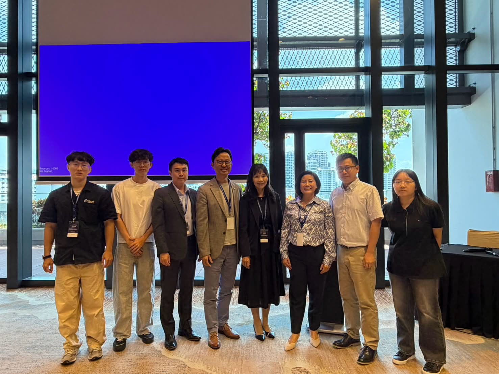

ACTIVITIES
Lab Activities
From domestic and international conferences to industry workshops and everyday faculty-student exchange, a record of the research journey shared by lab members.
Activity List

2026.08
The 5th Asian Conference on Ergonomics & Design (Singapore)
The team presented research in Singapore and exchanged ideas with international ergonomics scholars.Congratulations! Prof. Kuo-Wei Su was elected President of the Asian Council on Ergonomics and Design.